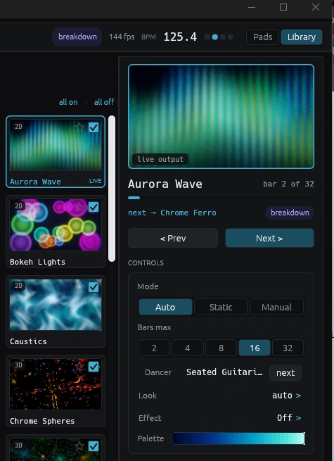
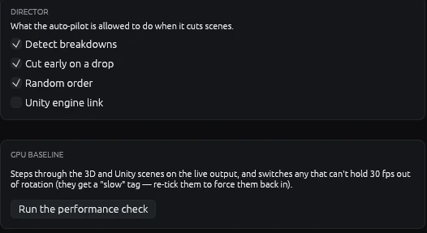
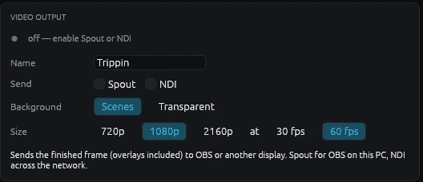
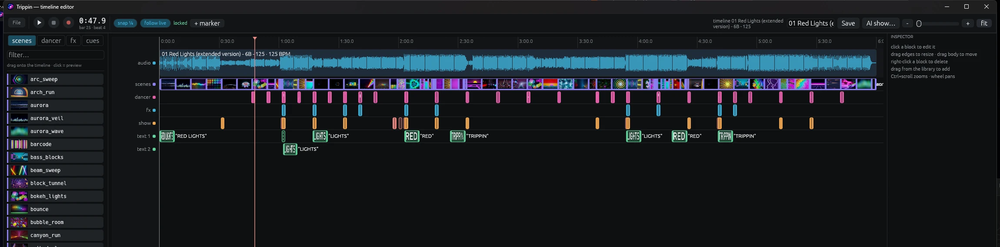

Install it, play some music, and Trippin does the rest. Here is everything a new user needs, with answers to the common questions at the end.
.exe) and run it.%APPDATA%\Trippin\trippin.json..pkg) and run it. It installs to Applications, and a newer package upgrades it in place.~/Library/Application Support/Trippin.Trippin is built to hold 60 fps on an RTX 3060 or an Apple M2. On weaker graphics some of the heavy 3D scenes are switched off for you, and the performance check works out which.
Trippin opens two windows: the visuals, and a control panel beside them.

The Perform tab while a track plays.
Every key can be changed on the Keys tab. Click rebind, then press a key.
| → ← | Next / previous scene |
| A H M | Mode: auto / static (hold) / manual |
| D | Dancer on / off |
| B | Blackout: fade to black and back |
| Z | Strobe on / off. It flashes on the live drum hits. |
| F | Full screen on / off |
| Space | Mark this beat as the downbeat, if the bar's "one" is in the wrong place |
| [ ] | Latency −5 ms / +5 ms, if the visuals land early or late |
| K · J | Save a clip of the last moments · record the whole set |
| T · G | Timeline play / pause · timeline record on / off |
| N | Show the now-playing card again |
Any action can also sit on a MIDI pad. See MIDI mapping.
Do this once, before your first show. It finds the scenes your GPU can't keep smooth, so the auto-pilot stops picking them.


The Video output card on the Stream tab.
Streaming? Send Trippin's picture to OBS as a video source.
winget install NDI.NDIRuntime. On a Mac, install NDI Tools. Trippin works without it, but NDI output won't. For a transparent background, to layer the dancer over your camera, choose Transparent under Background.Load a track, lay out the show, and let it play itself. You can build it by hand, record it live, or have an AI draft it.
Go to the Timeline tab and press Open timeline editor, or press F2. Saved shows are listed on that tab; click one to load it.
Use File → Add song… in the editor, or drag an mp3, flac, wav, m4a or ogg onto either window. Trippin analyses it and draws the waveform, a beat and bar grid, and a playhead.
Drag scenes, dancer routines, effects and text from the library on the left onto the strip. They snap to the beat. Click a block to edit it, drag its edges to resize, right-click to delete. Ctrl+scroll zooms and the wheel pans.
Press T or the play button. The track plays through your speakers and through Trippin, so the visuals react to it. Click empty space on the strip to move the playhead.
Press G to arm recording, play the track, and perform with your hotkeys or pads. Every move lands on the strip as a cue. Then tweak it.
Press Save. Your show is stored in a timelines folder next to your settings, and drops back in when you load it.

A whole show in the editor. Click the image to zoom in.
The AI show… button in the editor writes the cue list for you from the real structure of your track. You supply your own key, and you can always edit the result.
Playing the same song through your DJ software? Turn on follow live in the editor. Trippin matches the live audio against the loaded track and fires your show in step with the deck.
It needs the same song to be playing. If the playhead jumps around, check that the track in the editor is the one you're actually playing.
More on the editor and the AI builder on the features page.
Run the performance check in Settings. It switches off the scenes your GPU can't hold at 30 fps. You can also untick heavy 3D scenes in the library by hand (filter by 3D). Closing other apps that use the GPU helps too.
That is breakdown mode, and it is on purpose. When the drums drop out for a moment, the flashes melt into a glow and the camera slows. When the kicks come back, so do the beats, and the drums slamming back in count as a drop. You can turn breakdown detection off in Settings → Director.
All of it, for the visuals. Trippin listens to your computer's audio, so it doesn't matter what is playing.
For the now-playing card, which shows the track name, Trippin reads Serato, VirtualDJ, rekordbox, Mixxx, and anything that reports to the operating system's media controls (Spotify, Apple Music, a browser, most media players). Any other tool can feed a text file. Traktor's track names aren't read directly yet.
Yes. Install the Trippin Agent on the DJ computer. It tells your Trippin machine what's playing, and the visuals come back to OBS over NDI. Turn on the remote in Trippin's Settings first.
Yes. Turn on iOS app remote in Settings, then use the Trippin Remote app on an iPhone or iPad on the same network, or browse to http://<your-computer's-ip>:9138 from any device. OSC controllers such as TouchOSC work too.
Install ffmpeg (winget install ffmpeg on Windows, brew install ffmpeg on a Mac), then press K to save the last minute, or J to record your whole set. Clips can be 16:9 or vertical 9:16, and go to your Videos folder (Movies on a Mac) in a Trippin folder.
An optional set of 40 extra shows with real-time lighting and geometry. Switch on Unity engine link in Settings and Trippin downloads the engine the first time (about 40 MB). After that it runs in the background and closes when Trippin does. See the scenes page.
No. Audio is analysed on your computer. The AI show builder is optional, uses your own key, and sends only a numeric summary of the track and its title, never the audio.
%APPDATA%\Trippin\trippin.json, with your saved shows in a timelines folder beside it.~/Library/Application Support/Trippin.Videos/Trippin (Movies/Trippin on a Mac).Run the newer installer or package. Your settings and shows are kept. Read what changed on the what's new page. For problems or ideas, open an issue on GitHub.